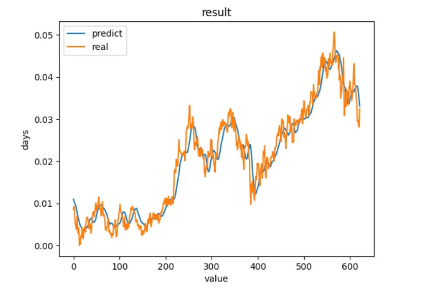

【day6】爬蟲與股票預測-長短期記憶模型(Long short-term memory) (下)
發布日期: 2022-09-10 00:01:19
原文連結: https://ithelp.ithome.com.tw/articles/10288943
LSTM股票預測
- 1.導入函式庫與介紹
- 2.資料前處理
- 3.架構模型與訓練
- 4.效能評估
1.導入函式庫與介紹
import numpy as np
import pandas as pd
import tensorflow.keras
from tensorflow.keras.models import Sequential
from tensorflow.keras.layers import LSTM, Dense
from sklearn.preprocessing import MinMaxScaler
1.numpy:陣列相關操作
2.keras.models:架構神經網路、與神經網路相關操作
3.keras.layers:創建神經網路
4.sklearn.preprocessing:數值正規化
5.matplotlib.pyplot:繪畫表格
2.資料前處理
首先我們先從pandas讀取昨天爬蟲拿到的csv檔，沒有的人可以觀看這篇【day5】爬蟲與股票預測-長短期記憶模型(Long short-term memory) (上)
df = pd.read_csv('data.csv')
我們在課堂的一開始有說到，大部分深度學習模型都要把數值壓縮到0~1之間，不只能加速收斂速度，所以今天我們股票預測要使用的方式是最大最小正規化(Min-Max Normalization)
def Min_Max_normalization(name):
#調整維度成[[資料1],[資料2]]
name = name.reshape(-1, 1)
#正規化數值
scaler = MinMaxScaler(feature_range=(0, 1)).fit(name)
sc = scaler.transform(name)
#[維度還原]
return sc.reshape(-1)
#df[row]:可以直接取一整排的數值回傳的type是dataframe
#values:轉成dataframe轉成array
open_p = Min_Max_normalization(df['開盤價'].values)
max_p = Min_Max_normalization(df['最高價'].values)
min_p = Min_Max_normalization(df['最低價'].values)
fin_p = Min_Max_normalization(df['收盤價'].values)
#replace(old,new)這裡是將文字中的,去除掉
len_p = np.array([int(i.replace(',','')) for i in df['成交筆數'].values])
len_p = Min_Max_normalization(len_p)
接下來我們來創建自己的資料集(Date set)，首先我們取每10天的資料預測每第11天的資料，並個資料都要帶有5筆特徵(開盤價、最高價、最低價、收盤價、成交筆數)
data = []
tmp = []
label = []
#最後一筆label的範圍是最大數量-11天
for cnt in range(len(open_p)-11):
#獲取10天的資料
open_10 = open_p[cnt:cnt+10]
max_10 = max_p[cnt:cnt+10]
min_10 = min_p[cnt:cnt+10]
fin_10 = fin_p[cnt:cnt+10]
len_10 = len_p[cnt:cnt+10]
#zip可以將每筆資料都同時丟進for迴圈中
for i,j,k,m,n in zip(open_10,max_10,min_10,fin_10,len_10):
tmp.append([i, j, k, m, n])
data.append(tmp)
tmp = []
取得收盤價
label.append(fin_p[cnt+11:cnt+12][0])
這樣子我們就能得到一組擁有10天資料5個特徵的訓練資料了(資料數量,天數,特徵)
接下來我們把資料分8:2切割我們的訓練數據與測試數據
split_cnt = int(len(data)*0.8)
x_train,y_train = np.array(data[0:split_cnt]),np.array(label[0:split_cnt])
x_test,y_test = np.array(data[0:len(data)-split_cnt]),np.array(label[0:len(data)-split_cnt])
這樣資料前處理就完成了~~
3.架構模型
今天的模型架構也很簡單，但有一個比較需要注意的return_sequences = True，使我們能夠考慮到前後天的資料，而不是只考慮到昨天的結果
model= Sequential()
model.add(LSTM(128,input_shape=(10, 5),return_sequences=True,activation='relu'))
model.add(LSTM(64,return_sequences=False,activation='relu'))
model.add(Dense(1))
#mse為跑回歸任務的其中一個loss function
#回歸任務沒有acc只有loss
model.compile(loss='mean_squared_error',optimizer='adam')
# 開始訓練model batch_size一次丟多少資料進去訓練 epochs總共要訓練幾次
history = model.fit(x_train, y_train,
batch_size=64,
epochs=10,
verbose=1,
validation_data=(x_test, y_test))
-------------------------------顯示-------------------------------
Epoch 10/10
39/39 [==============================] - 0s 8ms/step - loss: 7.0062e-05 - val_loss: 8.8297e-06
4.效能評估
我們直接拿實際值與預測出來的數值作比對
y_predicted = model.predict(x_test)
#預測
plt.plot(y_predicted)
#實際值
plt.plot(y_test)
#標題
plt.title('result')
#y軸標籤
plt.ylabel('days')
#x軸標籤
plt.xlabel('value')
#顯示折線的名稱
plt.legend(['predict', 'real'], loc='upper left')
#顯示折線圖
plt.show()

我們可以看到訓練出來的結果還是有貼近實際值，但實際值下降時，預測有時候是上升的，因為股票預測考慮的因素不只有這一些，考慮更多因素說不定能有更好的結果。
完整程式碼(LSTM)
import numpy as np
import pandas as pd
import tensorflow.keras
from tensorflow.keras.models import Sequential
from tensorflow.keras.layers import LSTM, Dense
from sklearn.preprocessing import MinMaxScaler
import matplotlib.pyplot as plt
def Min_Max_normalization(name):
name = name.reshape(-1, 1)
scaler = MinMaxScaler(feature_range=(0, 1)).fit(name)
sc = scaler.transform(name)
return sc.reshape(-1)
df = pd.read_csv('data.csv')
open_p = Min_Max_normalization(df['開盤價'].values)
max_p = Min_Max_normalization(df['最高價'].values)
min_p = Min_Max_normalization(df['最低價'].values)
fin_p = Min_Max_normalization(df['收盤價'].values)
len_p = np.array([int(i.replace(',','')) for i in df['成交筆數'].values])
len_p = Min_Max_normalization(len_p)
data = []
tmp = []
label = []
for cnt in range(len(open_p)-11):
open_10 = open_p[cnt:cnt+10]
max_10 = max_p[cnt:cnt+10]
min_10 = min_p[cnt:cnt+10]
fin_10 = fin_p[cnt:cnt+10]
len_10 = len_p[cnt:cnt+10]
for i,j,k,m,n in zip(open_10,max_10,min_10,fin_10,len_10):
tmp.append([i, j, k, m, n])
data.append(tmp)
tmp = []
label.append(fin_p[cnt+11:cnt+12][0])
split_cnt = int(len(data)*0.8)
x_train,y_train = np.array(data[0:split_cnt]),np.array(label[0:split_cnt])
x_test,y_test = np.array(data[0:len(data)-split_cnt]),np.array(label[0:len(data)-split_cnt])
model= Sequential()
model.add(LSTM(128,input_shape=(10, 5),return_sequences=True,activation='relu'))
model.add(LSTM(64,return_sequences=False,activation='relu'))
model.add(Dense(1))
model.compile(loss='mean_squared_error',optimizer='adam')
# 開始訓練model batch_size一次丟多少資料進去訓練 epochs總共要訓練幾次
history = model.fit(x_train, y_train,
batch_size=64,
epochs=10,
verbose=1,
validation_data=(x_test, y_test))
y_predicted = model.predict(x_test)
#預測
plt.plot(y_predicted)
#實際值
plt.plot(y_test)
#標題
plt.title('result')
#y軸標籤
plt.ylabel('days')
#x軸標籤
plt.xlabel('value')
#顯示折線的名稱
plt.legend(['predict', 'real'], loc='upper left')
#顯示折線圖
plt.show()
到這邊基礎技術基本上都教完了~明天來教一下如何使用pytorch吧
課程中的程式碼都能從我的github專案中看到
https://github.com/AUSTIN2526/learn-AI-in-30-days